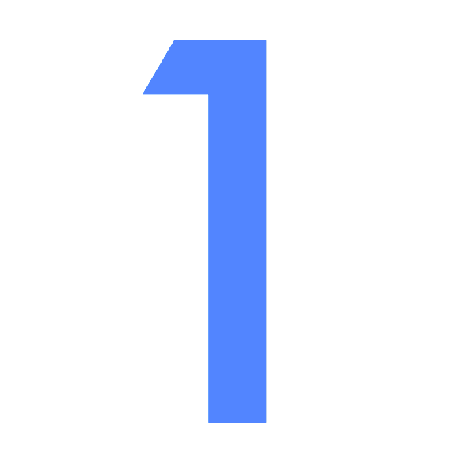
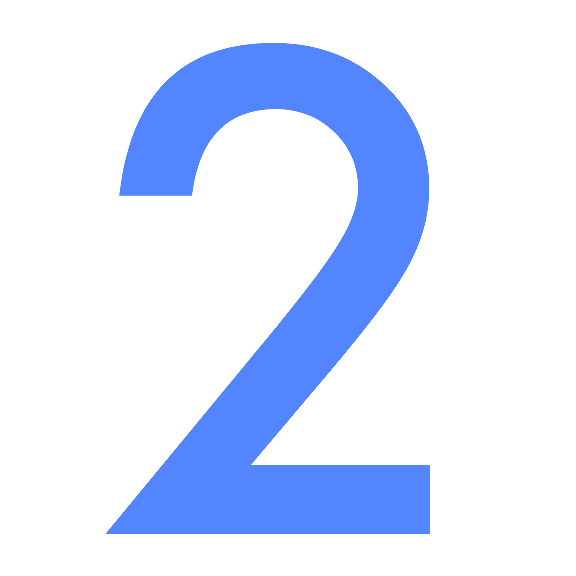
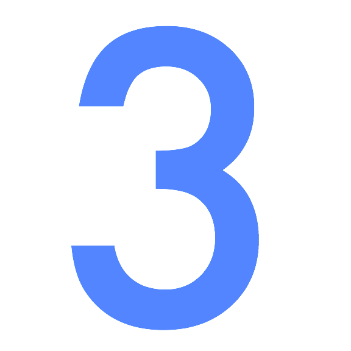

SkyWay for Web.
Take your website further.
WebRTCの複雑なAPIを簡単に利用して、魅力的なアプリケーションを開発できる
TLSに対応したセキュアなシグナリング
豊富な拡張機能(TURNサーバ、音声認識、マルチパーティ、スクリーンシェア)を組込み可能
Documentation
WebRTCの複雑なAPIを簡単に利用して、魅力的なアプリケーションを開発できる
TLSに対応したセキュアなシグナリング
豊富な拡張機能(TURNサーバ、音声認識、マルチパーティ、スクリーンシェア)を組込み可能
簡単なアプリを今すぐできます。
It is easy to build a web application using SkyWay. Why not give it a try?

Sign Up (Free)
SkyWayのWebAPIを利用するため、開発者登録を行いAPIキーを申し込みます。

SkyWayを利用してアプリケーションを開発しましょう。
コードサンプルを参考にライブラリをインクルードし、JavaScriptコードを書きましょう。
<script src="https://skyway.io/dist/0.3/peer.min.js"></script> <script> var peer = new Peer(myId, {key: 'yourApiKey'}); peer.on('open', function(id) { var conn = peer.connect('anotherId'); conn.on('open', function() { conn.send('hello world'); }); }); </script>

Full Guide
Need Help?
開発に必要な情報を収集しましょう。